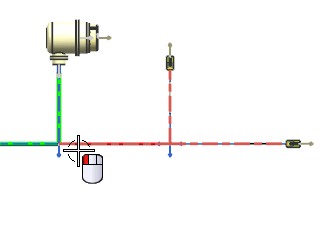
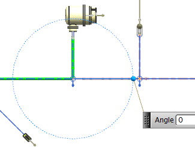
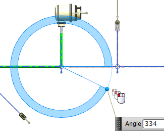
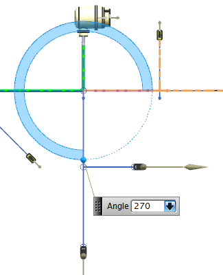
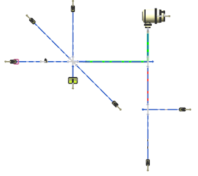

On the Formboard Tools toolbar, from the Formboard Path Orientation Drop–down list, select Orient Branch .
In the Branch Angle Type list, make sure Angle is selected.
Select the branch at the location shown below.

The Angle on–screen input box displays the current angle of this branch.

You want the branch to be placed below the main branch at an angle of 90 degrees.
In the Preview group, make sure the Preview check box is selected.
Drag the Angle handle clockwise below the main branch.

As you move the handle, the Angle value updates.
In the Angle on-screen input box, type 270 and 回车。

A preview of the branch appears at its new orientation.
Click Apply.

The branch is reoriented.